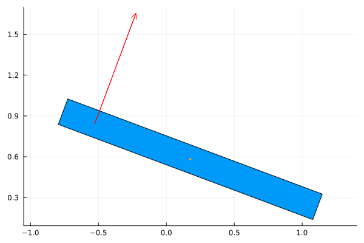
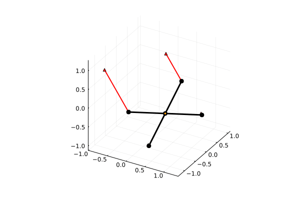

Quadrotor Models
Two versions of the quadrotor are provided: a planar approximation (QuadrotorPlanar) and a 3D model (Quadrotor3D). Additionally, when also using the Plots.jl package, the convenience plotting functions plot_quadrotor_planar and plot_quadrotor_3d are provided.
Planar Approximation
The planar quadrotor (QuadrotorPlanar, technically a birotor) is a rigid body with two rotors in line with the center of mass.

NeuralLyapunovProblemLibrary.QuadrotorPlanar — Function
QuadrotorPlanar(; name, defaults)Create an ODESystem representing a planar approximation of the quadrotor (technically a birotor).
This birotor is a rigid body with two rotors in line with the center of mass. The location of the center of mass is determined by x and y. Its orientation is determined by θ, measured counter-clockwise from the $x$-axis. The thrust from the right rotor (on the positive $x$-axis when $θ = 0$) is the input u1. The thrust from the other rotor is u2. Note that these thrusts should be nonnegative and if a negative input is provided, the model replaces it with 0.
The equations governing the planar quadrotor are:
\[\begin{align} mẍ &= -(u_1 + u_2)\sin(θ), \\ mÿ &= (u_1 + u_2)\cos(θ) - mg, \\ I_{quad} \ddot{θ} &= r (u_1 - u_2). \end{align}\]
The name of the ODESystem is name.
ODESystem Parameters
m: mass of the quadrotor.I_quad: moment of inertia of the quadrotor around its center of mass.g: gravitational acceleration in the direction of the negative $y$-axis (defaults to 9.81).r: distance from center of mass to each rotor.
Users may optionally provide default values of the parameters through defaults: a vector of the default values for [m, I_quad, g, r].
Copy-Pastable Code
using ModelingToolkit
using NeuralLyapunovProblemLibrary
using OrdinaryDiffEq
using Plots
using LinearAlgebra
using ControlSystemsBase: lqr, Continuous
@named quadrotor_planar = QuadrotorPlanar()
function π_lqr(p; x_eq = zeros(6), Q = I(6), R = I(2))
m, I_quad, g, r = p
# Assumes linearization around a fixed point
# x_eq = (x*, y*, 0, 0, 0, 0), u_eq = (mg / 2, mg / 2)
A_lin = zeros(6, 6)
A_lin[1:3,4:6] .= I(3)
A_lin[4,3] = -g
B_lin = zeros(6, 2)
B_lin[5,:] .= 1 / m
B_lin[6,:] .= r / I_quad, -r / I_quad
K = lqr(Continuous, A_lin, B_lin, Q, R)
T0 = m * g / 2
return (x) -> -K * (x - x_eq) + [T0, T0]
end
t, = independent_variables(quadrotor_planar)
Dt = Differential(t)
params = [quadrotor_planar.m, quadrotor_planar.I_quad, quadrotor_planar.g, quadrotor_planar.r]
q = [quadrotor_planar.x, quadrotor_planar.y, quadrotor_planar.θ]
u = [quadrotor_planar.u1, quadrotor_planar.u2]
x = vcat(q, Dt.(q))
# Assume rotors are negligible mass when calculating the moment of inertia
m, r = ones(2)
g = 1.0
I_quad = m * r^2 / 12
p = [m, I_quad, g, r]
# Create controller system and combine with quadrotor_planar, then simplify
@named lqr_controller = ODESystem(
u .~ π_lqr(p)(x),
t,
vcat(x, u),
params
)
@named quadrotor_planar_lqr = compose(lqr_controller, quadrotor_planar)
quadrotor_planar_lqr = structural_simplify(quadrotor_planar_lqr)
# Random initialization
# structural_simplify sometimes rearranges variables, so we use a Dict to provide the
# initialization and parameters when constructing the ODEProblem
x0 = Dict(x .=> 2 * rand(6) .- 1)
p = Dict(params .=> [m, I_quad, g, r])
τ = sqrt(r / g)
prob = ODEProblem(quadrotor_planar_lqr, x0, 15τ, p)
sol = solve(prob, Tsit5())
gif(
plot_quadrotor_planar(
sol,
[m, I_quad, g, r];
x_symbol=q[1],
y_symbol=q[2],
θ_symbol=q[3],
u1_symbol=u[1],
u2_symbol=u[2]
);
fps = 50
)Plotting the Planar Quadrotor
NeuralLyapunovProblemLibrary.plot_quadrotor_planar — Function
plot_quadrotor_planar(x, y, θ, [u1, u2,] p, t; title)
plot_quadrotor_planar(sol, p; title, N, x_symbol, y_symbol, θ_symbol)Plot the planar quadrotor's trajectory.
When thrusts are supplied, the arrows scale with thrust, otherwise the arrows are of constant length.
Arguments
x: The x-coordinate of the quadrotor at each time step.y: The y-coordinate of the quadrotor at each time step.θ: The angle of the quadrotor at each time step.u1: The thrust of the first rotor at each time step.u2: The thrust of the second rotor at each time step.t: The time steps.sol: The solution to the ODE problem.p: The parameters of the quadrotor.
Keyword arguments
title: The title of the plot; defaults to no title (i.e.,title="").N: The number of points to plot; when usingx,y,θ, andt, useslength(t); defaults to 500 when usingsol.x_symbol: The symbol of the x-coordinate insol; defaults to:x.y_symbol: The symbol of the y-coordinate insol; defaults to:y.θ_symbol: The symbol of the angle insol; defaults to:θ.u1_symbol: The symbol of the thrust of the first rotor insol; defaults to:u1.u2_symbol: The symbol of the thrust of the second rotor insol; defaults to:u2.
3D Model
A full 3D model from (Mellinger and Kumar, 2011) is provided via Quadrotor3D.

NeuralLyapunovProblemLibrary.Quadrotor3D — Function
Quadrotor3D(; name, defaults)Create an ODESystem representing a quadrotor in 3D space.
The quadrotor is a rigid body in an X-shape (90°-angles between the rotors). The equations governing the quadrotor can be found in (Mellinger and Kumar, 2011).
ODESystem State Variables
x: $x$-position (world frame).y: $y$-position (world frame).z: $z$-position (world frame).φ: roll around body $x$-axis (Z-X-Y Euler angles).θ: pitch around body $y$-axis (Z-X-Y Euler angles).ψ: yaw around body $z$-axis (Z-X-Y Euler angles).vx: $x$-velocity (world frame).vy: $y$-velocity (world frame).vz: $z$-velocity (world frame).ωφ: roll angular velocity (world frame).ωθ: pitch angular velocity (world frame).ωψ: yaw angular velocity (world frame).
ODESystem Input Variables
T: thrust (should be nonnegative).τφ: roll torque.τθ: pitch torque.τψ: yaw torque.
Not only should the aggregate thrust be nonnegative, but the torques should have been generated from nonnegative individual rotor thrusts. The model calculates individual rotor thrusts and replaces any negative values with 0.
ODESystem Parameters
m: mass of the quadrotor.g: gravitational acceleration in the direction of the negative $z$-axis (defaults to 9.81).Ixx,Ixy,Ixz,Iyy,Iyz,Izz: components of the moment of inertia matrix of the quadrotor around its center of mass:\[I = \begin{pmatrix} I_{xx} & I_{xy} & I_{xz} \\ I_{xy} & I_{yy} & I_{yz} \\ I_{xz} & I_{yz} & I_{zz} \end{pmatrix}.\]
Users may optionally provide default values of the parameters through defaults: a vector of the default values for [m, g, Ixx, Ixy, Ixz, Iyy, Iyz, Izz].
Copy-Pastable Code
using ModelingToolkit
import ModelingToolkit: inputs
using NeuralLyapunovProblemLibrary
using OrdinaryDiffEq
using Plots
using LinearAlgebra
using ControlSystemsBase: lqr, Continuous
# Define LQR controller
function π_lqr(p; x_eq = zeros(12), u_eq = [p[1]*p[2], 0, 0, 0], Q = I(12), R = I(4))
@named quadrotor_3d = Quadrotor3D()
# Use equilibrium as linearization point
u = inputs(quadrotor_3d)
x = setdiff(unknowns(quadrotor_3d), u)
params = parameters(quadrotor_3d)
op = Dict(vcat(x .=> x_eq, u .=> u_eq, params .=> p))
# Linearize with ModelingToolkit
mats, sys = linearize(quadrotor_3d, u, x; op)
# Sometimes linearization will reorder the variables, but we can undo that with
# permutation matrices Px : x_new = Px * x and Pu : u_new = Pu * u
x_new = unknowns(sys)
u_new = inputs(sys)
Px = (x_new .- x') .=== 0
Pu = (u_new .- u') .=== 0
A_lin = Px' * mats[:A] * Px
B_lin = Px' * mats[:B] * Pu
K = lqr(Continuous, A_lin, B_lin, Q, R)
return (x) -> -K * (x - x_eq) + u_eq
end
@named quadrotor_3d = Quadrotor3D()
# Set up variable symbols
t, = independent_variables(quadrotor_3d)
Dt = Differential(t)
x = [
quadrotor_3d.x,
quadrotor_3d.y,
quadrotor_3d.z,
quadrotor_3d.φ,
quadrotor_3d.θ,
quadrotor_3d.ψ,
quadrotor_3d.vx,
quadrotor_3d.vy,
quadrotor_3d.vz,
quadrotor_3d.ωφ,
quadrotor_3d.ωθ,
quadrotor_3d.ωψ
]
u = [
quadrotor_3d.T,
quadrotor_3d.τφ,
quadrotor_3d.τθ,
quadrotor_3d.τψ
]
params = [
quadrotor_3d.m,
quadrotor_3d.g,
quadrotor_3d.Ixx,
quadrotor_3d.Ixy,
quadrotor_3d.Ixz,
quadrotor_3d.Iyy,
quadrotor_3d.Iyz,
quadrotor_3d.Izz
]
# Assume rotors are negligible mass when calculating the moment of inertia
m, L = ones(2)
g = 1.0
Ixx = Iyy = m * L^2 / 6
Izz = m * L^2 / 3
Ixy = Ixz = Iyz = 0.0
p = [m, g, Ixx, Ixy, Ixz, Iyy, Iyz, Izz]
# Create controller system and combine with quadrotor_3d, then simplify
@named lqr_controller = ODESystem(
u .~ π_lqr(p)(x),
t,
vcat(x, u),
params
)
@named quadrotor_3d_lqr = compose(lqr_controller, quadrotor_3d)
quadrotor_3d_lqr = structural_simplify(quadrotor_3d_lqr)
# Random initialization
# structural_simplify sometimes rearranges variables, so we use a Dict to provide the
# initialization and parameters when constructing the ODEProblemp = Dict(params .=> p)
δ = 0.5
x0 = Dict(x .=> δ .* (2 .* rand(12) .- 1))
τ = sqrt(L / g)
p = Dict(params .=> [m, g, Ixx, Ixy, Ixz, Iyy, Iyz, Izz])
prob = ODEProblem(quadrotor_3d_lqr, x0, 15τ, p)
sol = solve(prob, Tsit5())
gif(
plot_quadrotor_3d(
sol,
[m, g, Ixx, Ixy, Ixz, Iyy, Iyz, Izz];
x_symbol=x[1],
y_symbol=x[2],
z_symbol=x[3],
φ_symbol=x[4],
θ_symbol=x[5],
ψ_symbol=x[6],
T_symbol=u[1],
τφ_symbol=u[2],
τθ_symbol=u[3],
τψ_symbol=u[4]
);
fps=50
)Plotting the 3D Quadrotor
NeuralLyapunovProblemLibrary.plot_quadrotor_3d — Function
plot_quadrotor_3d(x, y, z, φ, θ, ψ, [T, τφ, τθ, τψ,] p, t; title)
plot_quadrotor_3d(sol, p; title, N, x_symbol, y_symbol, z_symbol, φ_symbol, θ_symbol, ψ_symbol, T_symbol, τφ_symbol, τθ_symbol, τψ_symbol)Plot the 3D quadrotor's trajectory.
When thrusts are supplied, the arrows scale with thrust, otherwise the arrows are of constant length.
Arguments
x: The x-coordinate of the quadrotor at each time step.y: The y-coordinate of the quadrotor at each time step.z: The z-coordinate of the quadrotor at each time step.φ: The roll of the quadrotor at each time step.θ: The pitch of the quadrotor at each time step.ψ: The yaw of the quadrotor at each time step.T: The thrust of the quadrotor at each time step.τφ: The roll torque of the quadrotor at each time step.τθ: The pitch torque of the quadrotor at each time step.τψ: The yaw torque of the quadrotor at each time step.t: The time steps.sol: The solution to the ODE problem.p: The parameters of the quadrotor.
Keyword arguments
title: The title of the plot; defaults to no title (i.e.,title="").N: The number of points to plot; when usingx,y,z, etc., useslength(t); defaults to 500 when usingsol.x_symbol: The symbol of the x-coordinate insol; defaults to:x.y_symbol: The symbol of the y-coordinate insol; defaults to:y.z_symbol: The symbol of the z-coordinate insol; defaults to:z.φ_symbol: The symbol of the roll insol; defaults to:φ.θ_symbol: The symbol of the pitch insol; defaults to:θ.ψ_symbol: The symbol of the yaw insol; defaults to:ψ.T_symbol: The symbol of the thrust insol; defaults to:T.τφ_symbol: The symbol of the roll torque insol; defaults to:τφ.τθ_symbol: The symbol of the pitch torque insol; defaults to:τθ.τψ_symbol: The symbol of the yaw torque insol; defaults to:τψ.
References
- Mellinger, D. and Kumar, V. (2011). Minimum snap trajectory generation and control for quadrotors. In: 2011 IEEE International Conference on Robotics and Automation; pp. 2520–2525.